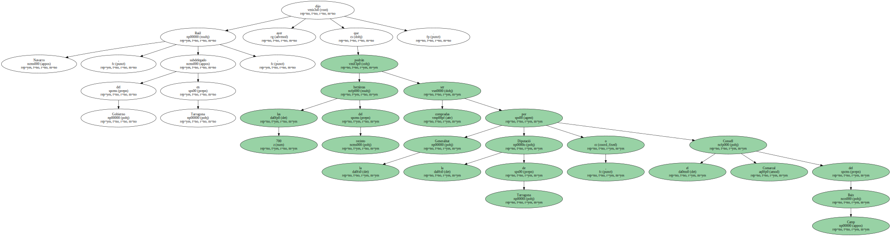
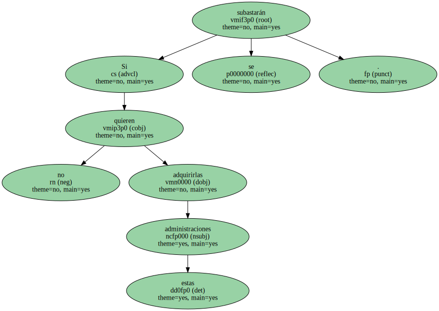
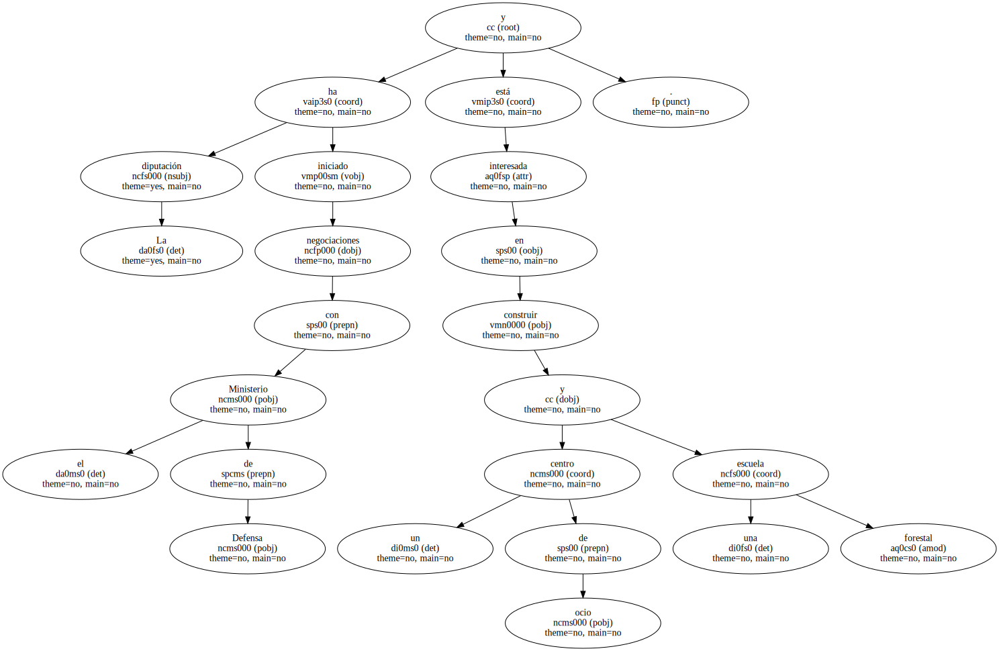
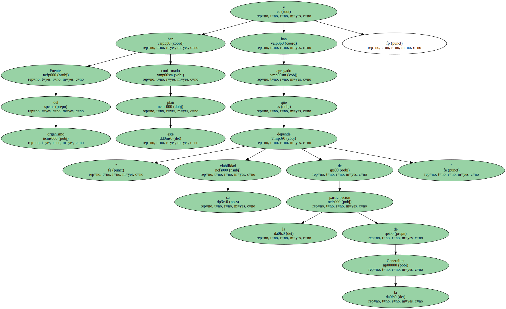
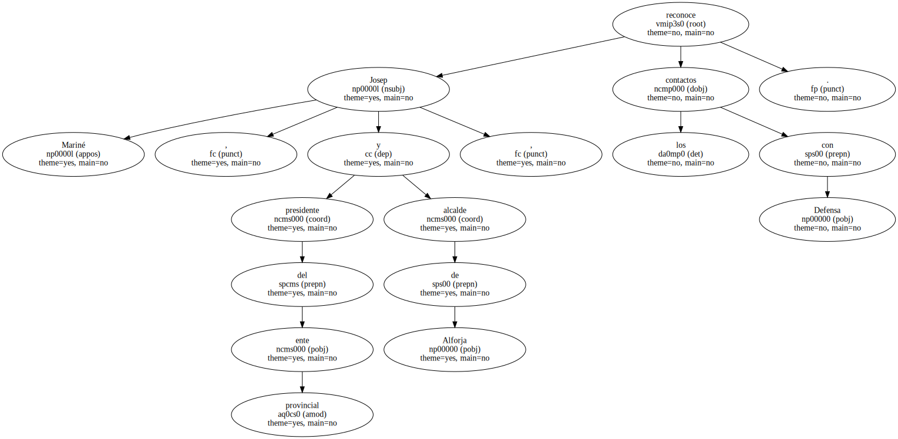

Raúl Navarro , subdelegado del Gobierno en Tarragona , dijo ayer que las 700 hectáreas del recinto podrán ser compradas por la Generalitat , la Diputació de Tarragona o el Consell Comarcal del Baix Camp.
Si estas administraciones no quieren adquirirlas se subastarán.
La finca está situada junto al futuro parque natural de las montañas de Prades en los municipios de Vilaplana , La Febró , Alforja y Arbolí.

La diputación ha iniciado negociaciones con el Ministerio de Defensa y está interesada en construir un centro de ocio y una escuela forestal.
Fuentes del organismo han confirmado este plan y han agregado que " su viabilidad depende de la participación de la Generalitat ".
Josep Mariné , presidente del ente provincial y alcalde de Alforja , reconoce los contactos con Defensa.
